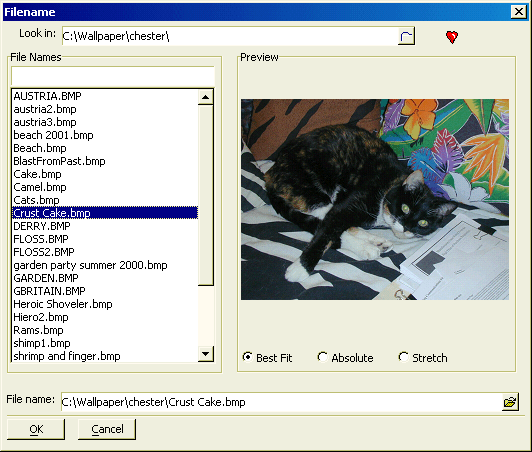

UI_GET_IMAGE_FILENAME()
Syntax
OutputString as C = UI_GET_IMAGE_FILENAME( [ Filename as C ] )
Argument | Description |
Filename | Optional. The filename of an image file. |
Description
The UI_GET_IMAGE_FILENAME() function prompts for an image filename (.bmp or .jpg) and displays an image browser.

Supported By
Alpha Five Version 5 and Above
Limitations
Desktop applications only.
Example
? ui_get_image_filename() = "C:\Wallpaper\chester\Crust Cake.bmp" |
See Also
((User Interaction _UI_ Functions|User Interaction (UI) Functions))